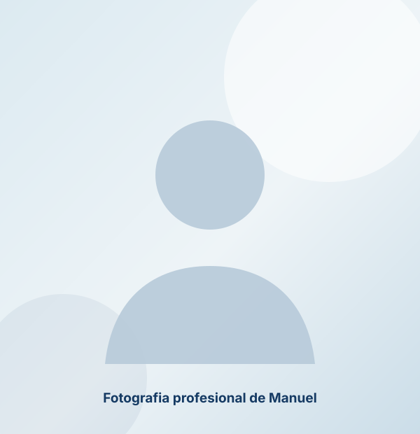

Planea tu retiro
Construye una estrategia que complemente tu AFORE y te permita mantener tu estilo de vida con mayor libertad financiera.
Conocer el enfoque →Diseñemos una estrategia financiera que te permita proteger lo que has construido, prepararte para el retiro y tomar decisiones con mayor tranquilidad en cada etapa de tu vida.

No existen productos universales. Cada estrategia parte de tu momento de vida, tus objetivos y los riesgos que necesitas administrar.
Construye una estrategia que complemente tu AFORE y te permita mantener tu estilo de vida con mayor libertad financiera.
Conocer el enfoque →Evita que una emergencia médica comprometa años de trabajo, ahorro y estabilidad patrimonial.
Conocer el enfoque →Diseña un respaldo económico que ayude a conservar la estabilidad de quienes más quieres ante un imprevisto.
Conocer el enfoque →Anticipa el costo de la educación y conviértelo en un objetivo financiero alcanzable y ordenado.
Conocer el enfoque →El proceso está diseñado para entender tu situación antes de recomendar cualquier solución.
Revisamos ingresos, gastos, deudas, patrimonio, responsabilidades y metas.
Definimos prioridades y ordenamos lo que quieres construir o proteger.
Diseñamos una ruta financiera alineada con tu etapa de vida.
Evaluamos opciones y tú decides qué acciones tienen sentido para ti.
Revisamos el plan y lo ajustamos conforme cambian tus objetivos.
Las decisiones financieras importantes requieren fundamentos, claridad y un acompañamiento que piense primero en tu vida.
Economista por la UAM, con una visión analítica para comprender riesgos, objetivos y decisiones de largo plazo.
Experiencia acompañando a profesionistas, emprendedores y familias en la construcción y protección de su patrimonio.
Estrategias de retiro, vida, salud y educación integradas dentro de un mismo plan.
Participación en universidades, empresas y espacios de comunicación para hacer las finanzas más comprensibles.
Recomendaciones explicadas con claridad, sin presión y con seguimiento conforme cambia tu vida.
Primero entendemos qué necesitas. Después evaluamos qué herramientas pueden ayudarte.
Al terminar Economía, viví el mismo momento de incertidumbre que muchas personas enfrentan al buscar un camino con propósito.
Descubrí en la asesoría financiera una forma de combinar análisis, independencia y servicio. Hoy acompaño a personas y familias a entender sus opciones y construir un plan que tenga sentido para la vida que quieren vivir.
Mi compromiso no es ofrecerte un producto de inmediato, sino ayudarte a tomar decisiones informadas y sostenibles.
Conoce mi enfoqueHacer dinero por hacerlo no garantiza una vida plena. Las finanzas deben ayudarte a vivir con más tranquilidad, libertad y propósito.
Las decisiones que tomas hoy pueden transformar tu futuro. La planeación funciona mejor cuando comienza con anticipación.
Ningún seguro o inversión es ideal para todos. La mejor estrategia depende de tu etapa de vida, prioridades y objetivos.
Educación financiera y planeación personalizada para diseñar el futuro que mereces.
Situaciones comunes que muestran cómo una estrategia clara puede cambiar la forma de enfrentar el futuro.
Situación: No tenía claridad sobre cuánto debía ahorrar.
✓ Construyó una estrategia de largo plazo alineada con sus objetivos.
Situación: Le preocupaba el impacto de un imprevisto médico.
✓ Implementó una estrategia de protección integral.
Situación: Querían avanzar sin descuidar otras metas.
✓ Diseñaron un plan equilibrado para sus objetivos familiares.
Situación: Tenía buenos ingresos, pero no una estrategia patrimonial.
✓ Construyó un plan alineado con la vida que quiere vivir.
Contenido escrito para ayudarte a comprender los temas que impactan tu retiro, tu protección y tu patrimonio.
Pequeñas decisiones tomadas hoy pueden generar grandes diferencias en tu patrimonio dentro de 10 o 20 años.
Ver análisis →Conoce los retos del retiro en México y las alternativas para complementar tu estrategia.
Ver análisis →Descubre por qué una enfermedad puede convertirse en uno de los mayores riesgos financieros.
Ver análisis →Conversemos sobre tus objetivos y resolvamos tus dudas con claridad.
Hablar con ManuelNo necesitas tener todas las respuestas hoy. El primer paso es comprender dónde estás, qué quieres construir y qué decisiones pueden acercarte a ese futuro.
Agenda tu Sesión Estratégica Primera conversación sin costo y sin compromiso.